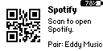
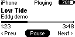

Eddy
Eddy Spotify on Flipper Zero.
Control Spotify from your Flipper while your phone plays the music.
Pair your iPhone
- Open Apps → Spotify on your Flipper. Scan the QR code with your iPhone to open Spotify.
- On your iPhone, open Settings → Bluetooth and select Eddy Music. Confirm the pairing code if prompted.
- Return to Spotify on your iPhone and play a song. Its title, artist and playback clock appear on your Flipper.
Eddy follows the active player on your iPhone. Choose Spotify for its music, then close this guide.
Pair your Android phone
- Open Apps → Spotify on your Flipper. Scan the QR code with your phone to open Spotify.
- In your phone’s Bluetooth settings, choose Pair new device → Eddy Music. Confirm the pairing code if prompted.
- Return to Spotify and play a song. Use Left, OK and Right on the Flipper to control playback.
Android pairs as a button remote. This build shows playback controls on the Flipper. Track details are available with iPhone pairing.
On your Flipper


This first release has passed simulated playback tests. Pairing and reconnecting after a power cycle still need confirmation on physical phones and Flippers.
Eddy remembers your pairing. Press Up to see the Spotify QR code again.
- Left
- Previous
- OK
- Play / pause
- Right
- Next